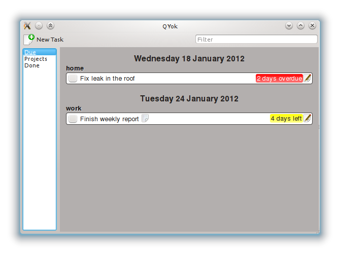
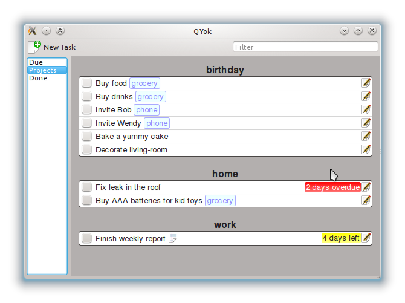
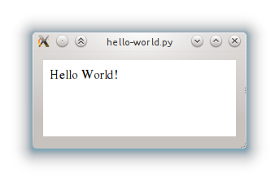
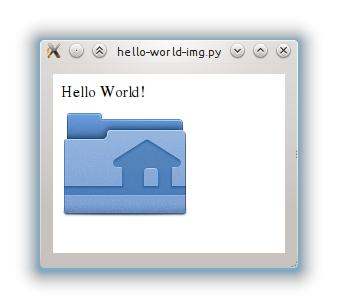
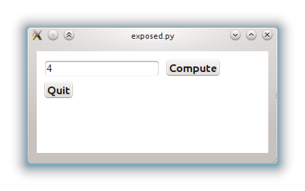

(This is part 1 of the PyQt+WebKit experiments series)
It is an interesting time to be a Qt developer: new ways to develop applications are emerging, one can either ignore them or experiment... I like experimentations.
In one corner we have traditional, QWidget-based Qt development.
In another corner we have QML, a declarative language coupled with JavaScript, which brings a whole new way to think about application development. Qt developers are betting a lot on QML, planning for it to be the preferred way to develop new applications with Qt 5.
In yet another corner is the Web, a perfect demonstration of technology hijacking: what was once designed to present structured documents has become one of the most powerful way to create applications.
Of those three technologies, I believe QML is the most innovative and powerful one, and I had high hopes it could secure a significant market share when Nokia and Intel were still planning to deliver it on their upcoming smart-phones and tablets. Now that Nokia switched to WP7 and Intel switched to EFL, I am a lot less confident QML will succeed. Experience shows that when two technologies are in competition, the best one does not automatically wins, parameters like market share and learning curve are as important as, if not more important than, technical excellence.
Not willing to ignore the behemoth that is the Web, I started an experiment: how would it feel to develop an application which would mix Qt and HTML rendering? Thanks to QtWebKit, this kind of integration is easy to achieve. My experimentation subject is based on Yokadi, a command-line based TODO list I work on. I decided to create a graphical frontend for it. The result is this:
 
This application, named QYok (yes, I suck at naming applications, suggestions for better names are welcome!), is an interesting mix of technologies. It uses:
In this series of articles, I am going to describe how one can mix PyQt and WebKit together, based on my learnings from the QYok project. In particular I want to show ways to generate native-looking HTML code, to ensure your application does not look alien on your desktop.
This is the first, very easy, step. Here is a complete example:
import sys
from PyQt4.QtCore import *
from PyQt4.QtGui import *
from PyQt4.QtWebKit import *
class Window(QWidget):
def __init__(self):
super(Window, self).__init__()
view = QWebView(self)
layout = QVBoxLayout(self)
layout.addWidget(view)
html = """
<html><body>
Hello World!
</body></html>
"""
view.setHtml(html)
def main():
app = QApplication(sys.argv)
window = Window()
window.show()
app.exec_()
if __name__ == "__main__":
main()
What all this does is create a window, create a webview in it and set some HTML. Nothing fancy.
One of the main point of using HTML is that it makes it reasonably easy to create complex documents which include images. So let's add a folder named "static" to our code folder, with an image in it. Since we are feeding QWebView with HTML, it has no way to know where to look for our images. Luckily, setHtml() accepts a second parameter: the base url of the document. Any relative url contained in our HTML will be resolved using this url as a base.
Here is the modified call to setHtml():
pyDir = os.path.abspath(os.path.dirname(__file__))
baseUrl = QUrl.fromLocalFile(os.path.join(pyDir, "static/"))
html = """
<html><body>
<div>Hello World!</div>
<img src="test.png"/>
</body></html>
"""
view.setHtml(html, baseUrl)

Be careful: always ensure baseUrl ends up with a trailing slash! If there is no trailing slash, QWebView will resolve "test.png" as "/path/to/tut1/statictest.png" instead of "/path/to/tut1/static/test.png". I learnt that the hard way...
QWebView.setHtml() makes it easy for Qt code to provide HTML content to WebKit, but it is a one-way only setup: it doesn't provide a way for JavaScript code to call Qt code. The way to do this is by exposing objects created on the Qt side to QWebView (or more precisely, to the main frame of the QWebPage inside QWebView).
QtWebKit takes advantage of Qt introspection features to access object methods and properties. To be exposed to JavaScript, an object must thus inherit from QObject and expose itself through Qt properties, Qt signals and Qt slots. Here is an example. First lets define a class named Foo which implements a compute() slot, performing complicated computations and a quit() slot:
class Foo(QObject):
@pyqtSlot(int, result=int)
def compute(self, value):
return value * 2
@pyqtSlot()
def quit(self):
QApplication.quit()
The important part here are the "@pyqtSlot()" decorators, which take care of turning our methods into slots. As you may have guessed, the decorator expects you to describe the type of the parameters accepted by your method, as well as the type of the returned value, if any.
Now that this done, lets create a Window class which will instantiate our Foo class and pass it to JavaScript:
class Window(QWidget):
def __init__(self):
super(Window, self).__init__()
view = QWebView(self)
layout = QVBoxLayout(self)
layout.addWidget(view)
self.foo = Foo(self)
view.page().mainFrame().addToJavaScriptWindowObject("foo", self.foo)
html = """
<html>
<head>
<script>
function updateEntry() {
var element = document.getElementById("entry");
var result = foo.compute(element.value);
element.value = result;
}
</script>
</head>
<body>
<div>
<input type="text" id="entry" value="1"/>
<input type="button" value="Compute" onclick="updateEntry()"/>
</div>
<div>
<input type="button" value="Quit" onclick="foo.quit()"/>
</div>
</body>
</html>
"""
view.setHtml(html)

Clicking the "Compute" button doubles the value in the input widget, clicking the "Quit" button, quits the application.
In this example, we create self.foo, an instance of the Foo class, then expose it to our QWebView with the line:
view.page().mainFrame().addToJavaScriptWindowObject("foo", self.foo)
We then feed our QWebView with some HTML code with view.setHtml(). Note how JavaScript code can now refer to our foo object as if it was a native JavaScript object.
That's it for now. Stay tuned for the next article.
PS: All examples are available from github: git clone git://github.com/agateau/pyqt-webkit-tutorial.git to get it.